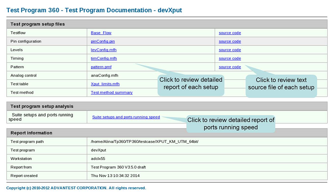

Test Program Browser report
It is an HTML report summarizing the settings for testflow, pins, levels, timings, patterns, test table and test methods in your test program. To generated this report, see Test Program Browser.
As seen in the following screenshot, the home page of this report contains two tables:
- Test program setup files: Provides entries to view different setups and the related source codes.
- Test program setup analysis: Provides entries to view the detailed report of suite setups and ports running speed.
- Report information: Provides the directory of the test program, the name of the system controller, the version of TP360 and the report generated time.

Functional changes
- Introduced in SmarTest 7.2.2